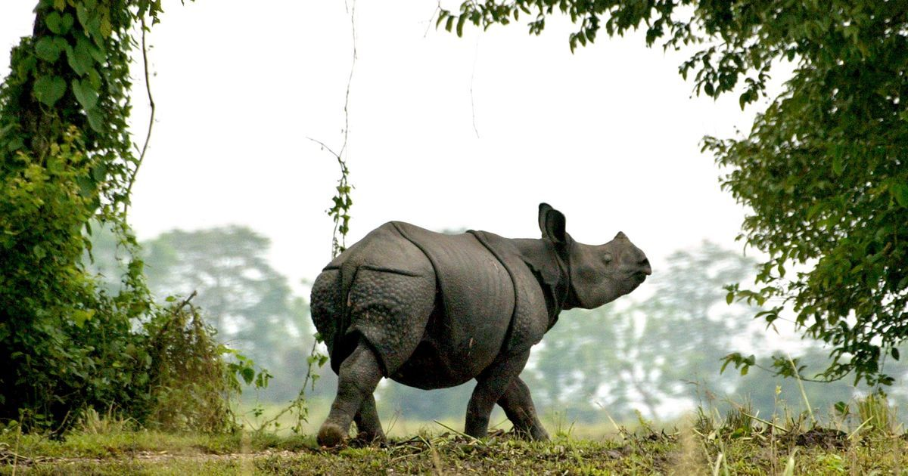
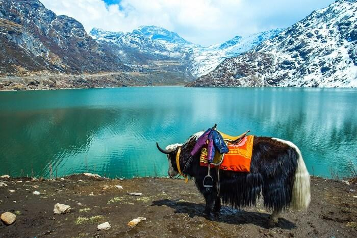
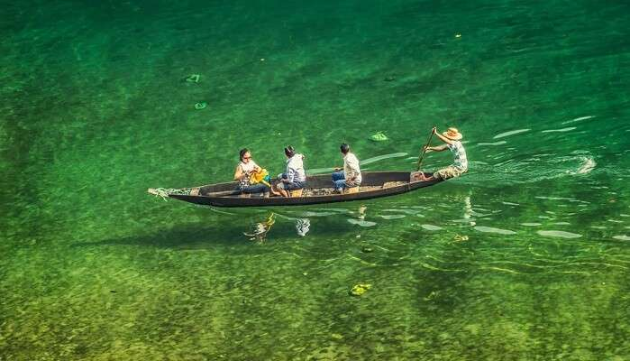
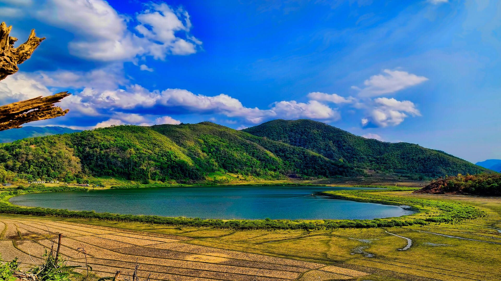
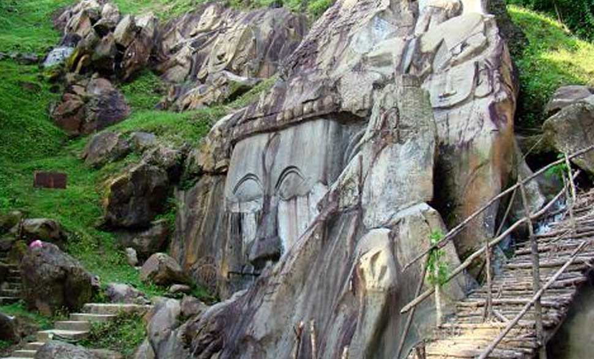

Assam

Assam is known for Assam tea and Assam silk. The state was the first site for oil drilling in Asia. Assam is home to the one-horned Indian rhinoceros, along with the wild water buffalo, pygmy hog, tiger and various species of Asiatic birds, and provides one of the last wild habitats for the Asian elephant. The Assamese economy is aided by wildlife tourism to Kaziranga National Park and Manas National Park, which are World Heritage Sites. Dibru-Saikhowa National Park is famed for its feral horses. Sal tree forests are found in the state which, as a result of abundant rainfall, look green all year round. Assam receives more rainfall than most parts of India; this rain feeds the Brahmaputra River, whose tributaries and oxbow lakes provide the region with a hydro-geomorphic environment. This undisturbed acres long stretch of forests and marshlands is located in the heart of Assam and is visited by hordes of tourists every year and it is one of the famous places to visit in North East India. The notable one-horned Rhino is a major attraction in Kaziranga which is an endangered species in the world. Other than that Elephants, wild water buffaloes and Swamp Deers can also be seen on a safari. You can either book an Elephant Safari or Jeep safari to explore the park. It is declared UNESCO World Heritage Site and is the pride of Assam.
Sikkim

The Kingdom of Sikkim was founded by the Namgyal dynasty in the 17th century. It was ruled by Buddhist priest-kings known as the Chogyal. It became a princely state of British India in 1890. Following Indian independence, Sikkim continued its protectorate status with the Union of India after 1947, and the Republic of India after 1950. It enjoyed the highest literacy rate and per capita income among Himalayan states. In 1973, anti-royalist riots took place in front of the Chogyal's palace. In 1975, after the Indian Army took over the city of Gangtok, a referendum was held that led to the deposition of the monarchy and Sikkim joining India as its 22nd state. Modern Sikkim is a multiethnic and multilingual Indian state. The official languages of the state are English, Nepali, Sikkimese and Lepcha. Additional official languages include Gurung, Limbu, Magar, Mukhia, Newari, Rai, Sherpa and Tamang for the purpose of preservation of culture and tradition in the state. English is taught in schools and used in government documents. The predominant religions are Hinduism and Vajrayana Buddhism. Sikkim's economy is largely dependent on agriculture and tourism. As of 2014, the state had the third-smallest GDP among Indian states, although it is also among the fastest-growing. Sikkim accounts for the largest share of cardamom production in India, and is the world's second largest producer of the spice after Guatemala. Sikkim achieved its ambition to convert its agriculture to fully organic between 2003 and 2016, and became the first state in India to achieve this distinction.It is also among India's most environmentally conscious states, having banned plastic water bottles "in any government functions and meetings" and polystyrene products (throughout the state).
Meghalaya

Meghalaya was formed by carving out two districts from the state of Assam: the United Khasi Hills and Jaintia Hills, and the Garo Hills on 21 January 1972. The population of Meghalaya as of 2016 is estimated to be 3,211,474. Meghalaya covers an area of approximately 22,430 square kilometres, with a length-to-breadth ratio of about 3:1. The state is bound to the south by the Bangladeshi divisions of Mymensingh and Sylhet, to the west by the Bangladeshi division of Rangpur, and to the north and east by India's State of Assam. The capital of Meghalaya is Shillong. During the British rule of India, the British imperial authorities nicknamed it the "Scotland of the East". Meghalaya was previously part of Assam, but on 21 January 1972, the districts of Khasi, Garo and Jaintia hills became the new state of Meghalaya. English is the official language of Meghalaya. Unlike many Indian states, Meghalaya has historically followed a matrilineal system where the lineage and inheritance are traced through women; the youngest daughter inherits all wealth and she also takes care of her parents. The state is the wettest region of India, with the wettest areas in the southern Khasi Hills recording an average of 12,000 mm (470 in) of rain a year.About 70 percent of the state is forested.The Meghalaya subtropical forests ecoregion encompasses the state; its mountain forests are distinct from the lowland tropical forests to the north and south. The forests are notable for their biodiversity of mammals, birds, and plants.
Mizoram

Mizoram is a state in northeastern India, with Aizawl as its seat of government and capital city. The name of the state is derived from "Mizo", the self described name of the native inhabitants, and "Ram", which in the Mizo language means "land." Thus "Mizo-ram" means "land of the Mizos". Within India's northeast old-Assam region, it is the southernmost landlocked state, sharing borders with three of the Seven Sister States of old Assam, namely Tripura, Assam and Manipur. The state also shares a 722-kilometre (449 mi) border with the neighbouring countries of Bangladesh and Myanmar. Like several other northeastern states of India, Mizoram was previously part of Assam until 1972, when it was carved out as a Union Territory. In 1986 the Indian Parliament adopted the 53rd amendment of the Indian Constitution, which allowed for the creation of the State of Mizoram on 20 February 1987, as India's 23rd state. According to a 2011 census, in that year Mizoram's population was 1,091,014. It is the 2nd least populous state in the country. Mizoram covers an area of approximately 21,087 square kilometres. About 91% of the state is forested. About 95% of Mizoram's population descends from a diverse tribal origin. Mizos first began to settle the area in the 16th century, coming in waves of immigration from Southeast Asia. This immigration lasted through the 18th century. Among all of the states of India, Mizoram has the highest concentration of tribal people. The Mizoram people are currently protected under the Indian constitution as a Scheduled Tribe. Mizoram is one of three states of India with a Christian majority (87%). Its people belong to various Christian denominations, being mostly Presbyterians in the north and Baptists in the south.
Tripura

Tripura is a state in northeastern India. The third-smallest state in the country, it covers 10,491 km2 (4,051 sq mi) and is bordered by Bangladesh to the north,[9] south, and west, and the Indian states of Assam and Mizoram to the east. In 2011 the state had 3,671,032 residents, constituting 0.3% of the country's population. The area of modern Tripura—ruled for several centuries by the Manikya dynasty—was part of an independent princely state under the protectorate of the British Empire. The independent Tripuri Kingdom (also known as Hill Tippera) joined the newly independent India in 1949. Tripura lies in a geographically disadvantageous location in India, as only one major highway, the National Highway 8, connects it with the rest of the country. Five mountain ranges—Boromura, Atharamura, Longtharai, Shakhan and Jampui Hills—run north to south, with intervening valleys; Agartala, the capital, is located on a plain to the west. The state has a tropical savanna climate, and receives seasonal heavy rains from the south west monsoon. Forests cover more than half of the area, in which bamboo and cane tracts are common. Tripura has the highest number of primate species found in any Indian state. Due to its geographical isolation, economic progress in the state is hindered. Poverty and unemployment continue to plague Tripura, which has a limited infrastructure. Most residents are involved in agriculture and allied activities, although the service sector is the largest contributor to the state's gross domestic product.